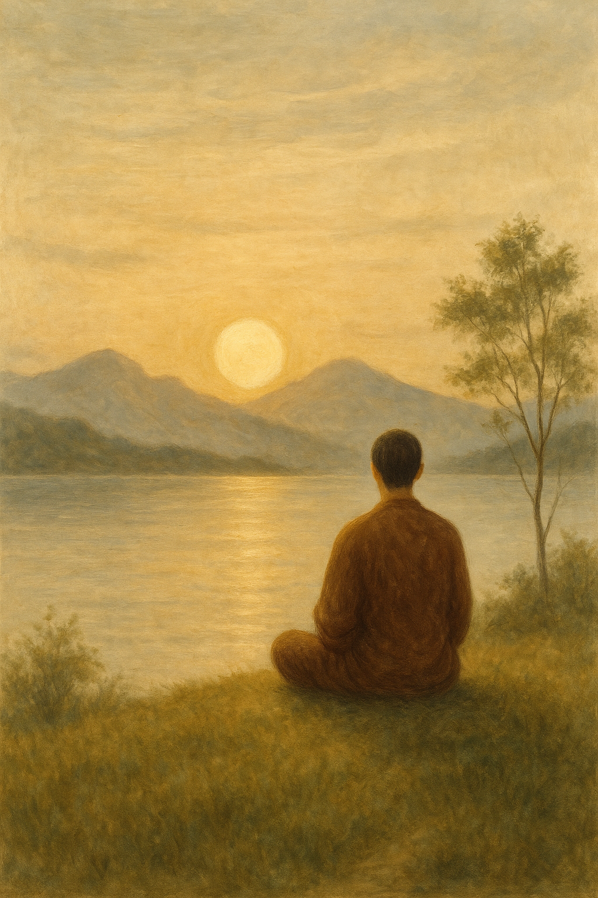
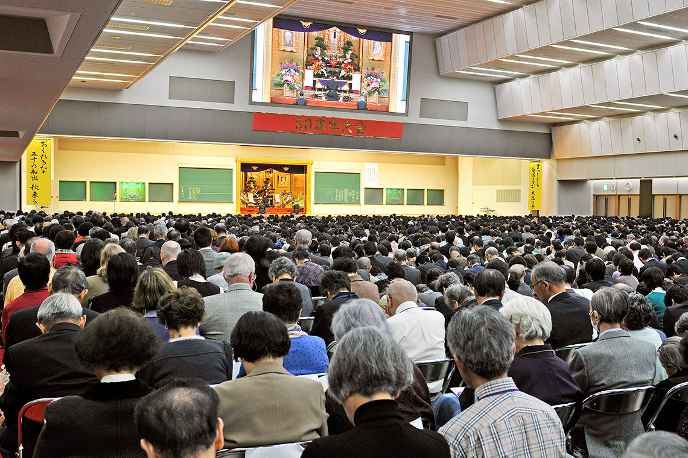

Đức Phật Thích Ca Mâu Ni dạy rằng tất cả chúng ta đều được sinh ra làm người để nghe Phật pháp và để đạt được niềm hạnh phúc tuyệt đối (絶対の幸福):
Thân người khó có; Nay ta đã có được.
Phật pháp khó được nghe; Nay ta đã được nghe.
Nếu ta không đạt giải thoát trong đời này,
Đến khi nào ta mới làm được?

天上天下 Thiên Thượng Thiên Hạ
唯我独尊 Duy Ngã Độc Tôn
三界皆苦 Tam Giới Giai Khổ
吾当安此 Ngô Đương An Thử
Trên trời và dưới đất,
chỉ có một sứ mệnh thiêng liêng duy nhất là của riêng con người chúng ta.
Tất cả ba giới đều là thế giới đau khổ.
Ta sẽ đạt được tâm an lạc ở đây.
Tại Sao Sinh Mạng Con Người Lại Nặng Hơn Cả Quả Địa Cầu Này?
Đức Phật đã giảng về sự khó khăn và tuyệt vời của việc được sinh ra làm người trong Kinh A Hàm. Đó chính là "Ngụ ngôn về con rùa mù và khúc gỗ."
Một ngày nọ, Đức Phật hỏi đệ tử của Ngài – Anan – một câu hỏi:
"Dưới đáy một đại dương bao la có một con rùa mù. Cứ mỗi 100 năm, con rùa lại trồi đầu lên mặt nước một lần. Trên mặt biển có một khúc gỗ đang trôi nổi. Ở giữa khúc gỗ có một lỗ hổng. Khúc gỗ ấy trôi dạt theo gió, lúc thì về phía đông, lúc lại về phía tây, khi thì về phương nam, khi thì về phương bắc. Anan, con nghĩ khả năng nào để khi con rùa mù ngoi lên, đầu nó lọt vào đúng lỗ hổng của khúc gỗ ấy?"
A-nan đáp: "Bạch Thế Tôn, chuyện đó gần như không thể xảy ra!"
Đức Phật nói: "Con nghĩ như vậy, đúng không? Nhưng cũng không thể hoàn toàn phủ nhận rằng điều đó có thể xảy ra một lần trong hàng nghìn tỷ năm, hoặc thậm chí lâu hơn. Được sinh ra làm người còn khó khăn và kỳ diệu hơn cả câu chuyện này."
Câu chuyện ngụ ngôn này cho chúng ta thấy việc được sinh ra làm người hiếm hoi và quý giá đến nhường nào. Nhưng thực tế, chúng ta cảm nhận về điều đó ra sao? Thay vì cảm thấy hạnh phúc, khi đối diện với khó khăn, ta thậm chí còn oán trách sự tồn tại của mình. Ta than thở: "Tại sao tôi phải sinh ra? Giá như tôi chưa từng tồn tại thì tôi đã không phải chịu đựng đau khổ như thế này."
Vì sao ta không thể trân trọng cuộc sống của chính mình? Đó là bởi con người vẫn chìm trong bóng tối vô minh, không rõ về mục đích sống. Vì sao ta được sinh ra làm người? Vì sao ta lại tồn tại? Tại sao ta phải tiếp tục sống dù cuộc đời đầy đau khổ? Khi đứng trước câu hỏi quan trọng nhất của kiếp nhân sinh, ta trở nên hoang mang và lạc lối.
Chỉ khi đạt được mục đích chân thật của cuộc đời, ta mới có thể thực sự tràn ngập vui sướng mà thốt lên: "Đây chính là lý do vì sao tôi được sinh ra. Tôi vô cùng hạnh phúc khi được làm người!". Khi đạt được mục đích tối hậu của cuộc đời, ta sẽ cảm nhận rõ ràng NIỀM VUI SƯỚNG CỦA KIẾP NGƯỜI. Vậy thì, đâu là mục đích quan trọng mà ta chỉ có thể hoàn thành khi được sinh ra làm người?
Cơ hội của chúng ta để thoát khỏi sáu nẻo luân hồi:
Đức Phật dạy rằng các kiếp sống của chúng ta có một lịch sử trải dài vô tận. Trong suốt vô số kiếp, ta đã trôi lăn trong cõi mê, không ngừng chịu khổ đau qua biết bao đời, bao kiếp—một khoảng thời gian dài đến mức khó mà tưởng tượng nổi.
Theo lời dạy của Đức Phật, có sáu cõi luân hồi trong vòng sinh tử:
Cõi trời
Cõi người
Cõi Atula
Cõi súc sanh
Cõi ngạ quỷ
Cõi địa ngục
Tất cả chúng sinh mãi mãi trôi lăn trong các cõi ảo mộng này, chịu đựng đau khổ không ngừng. Đây được gọi là "luân hồi trong sáu cõi" hoặc "bánh xe khổ đau bất tận". Đức Phật dạy rằng mục đích của việc lắng nghe Phật pháp là để thoát khỏi các cõi mê lầm này và đạt được hạnh phúc vĩnh hằng. Để đạt được mục tiêu này, chúng ta phải được sinh ra làm người.
Thân người khó có; Nay ta đã có được.
Phật pháp khó được nghe; Nay ta đã được nghe.
Nếu ta không đạt giải thoát trong đời này,
Đến khi nào ta mới làm được?
Được sinh làm người là một phước báu hiếm có—một phước báu mà ta đang có. Được nghe Phật pháp là một điều hiếm có—một phước báu lớn dành cho tất cả chúng ta.
Ta phải đạt được sự giải thoát trong đời này bằng mọi giá.
Nếu không, đời nào mới có thể cứu được chính mình?
Đây là cơ hội duy nhất trong vàn kiếp.
Đức Phật Thích Ca Mâu Ni luôn dạy chúng ta rằng lý do ta được sinh làm người là để lắng nghe Phật pháp (bản nguyện của Phật A Di Đà), chấm dứt vòng luân hồi vô tận và đạt đến hạnh phúc tuyệt đối.
Khi mục đích của cuộc đời được thực hiện, lần đầu tiên trong cuộc đời, ta mới thực sự hiểu được vì sao một đời người lại nặng hơn cả Trái Đất này. Khi ấy, ta sẽ nhận ra ân sâu của cha mẹ và tổ tiên vì đã cho ta được sinh ra trong cõi này.
*Chú thích về 6 cõi giới:
Cõi địa ngục:
Cõi của đau khổ cùng cực.
Cõi ngạ quỷ:
Trong cõi này, mỗi khi chúng sinh cố ăn hoặc uống, tất cả thức ăn và nước uống đều biến thành lửa, khiến chúng không thể tiêu thụ bất cứ thứ gì. Vì thế, chúng vô cùng gầy gò và luôn chịu đựng cơn đói khát triền miên.
Cõi súc sinh:
Thế giới của chó, mèo và các loài động vật khác. Ở đây, kẻ mạnh nắm quyền, ức hiếp kẻ yếu, khiến chúng sinh luôn sống trong sợ hãi.
Cõi A-tu-la:
Cõi của những sự xung đột, nơi chúng sinh chịu khổ vì những cuộc chiến đấu không ngừng.
Cõi người:
Cõi mà chúng sinh trải nghiệm cả khổ đau lẫn niềm vui. Đây chính là cõi mà chúng ta đang sống.
Cõi trời:
Cõi của sự hưởng thụ sung mãn. Nỗi khổ ở đây nhẹ hơn so với các cõi khác, nhưng vẫn là cõi của si mê. Đời sống của chúng sinh nơi đây có giới hạn, và niềm vui không tồn tại mãi mãi.

Phật giáo dành cho người mới bắt đầu.
Phật giáo cơ bản dành cho người mới bắt đầu tìm hiểu về Phật giáo.